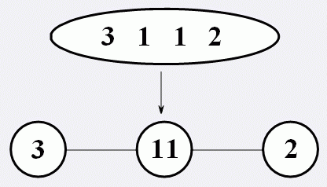
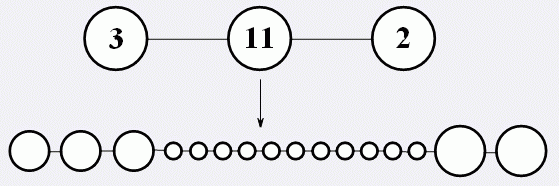
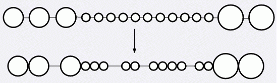

2222年，人类在银河系外的某颗星球上发现了生命，并且携带了一个细胞回到了地球。经过反复研究，人类已经完全掌握了这类细胞的发展规律：
这种细胞最初的形态是“长条形”，一端是头，一端是尾，中间是躯干。细胞内部含有一列密码（你可以认为它是这种细胞的DNA）。密码是一个长度为 $n$的数字串，且仅含有 $1$~$9$这 $9$种数字，沿着细胞的躯干从头到尾排列着。
首先，细胞会经历一次分裂。细胞将沿躯干方向分裂成若干个球体，躯干将退化成丝状物，连接着相邻的球体。在分裂过程中，质量是均匀分布的。换句话说，若分裂成 $k$ 个球体，每个球体的质量为原来的 $1/k$。然而，密码的分布是不确定的。若分割成 $k$ 个球体，密码会被切割成k段（每段长度至少为 $1$），并按从头到尾的顺序分布在各个球体中。如图，为其中一种合法的一次分裂：

接下来，细胞会经历二次分裂。对于每个球体，其中会含有一小段密码（注意他是有序的），我们把它看作一个十进制的数 $T$。这个球体会被分割成 $T$ 个小球体，并排成一排，之间用躯干退化成的丝状物相连接，并且质量仍然是均匀分布的，每个小球体的质量都是原球体的 $1/T$。至此，密码已经发挥了它的作用，便消失了。如图，为二次分裂：

最后，细胞会进行变异。相邻小球体之间的丝状物可能会退化掉，这两个小球体便会以相切的方式直接连接。显然，二次分裂后，除两端外的每个小球体都有两段丝状物与其连接（头尾两端的小球体只有一段丝状物与其相连）。对于每个小球体，必须至少退化一段与其相连的丝状物，否则这个结构不稳定，会继续变异。如图，为一种稳定的变异：

现在，我们想知道，对于一个给定密码的细胞，总共有多少种稳定的结构。两种结构被认为相同，当且仅当他们拥有相同个数的小球体，从头到尾每个小球体的质量相同，并且从头到尾每对相邻小球体之间的连接方式相同（都是通过丝状物相连或都是通过相切直接相连）。你只需要回答这个结果 $\bmod 1000000007$即可。
 Comet OJ
Comet OJ